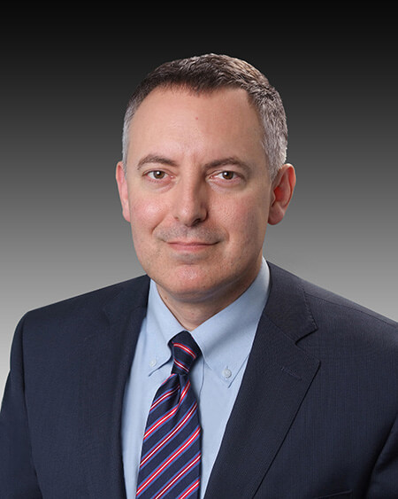
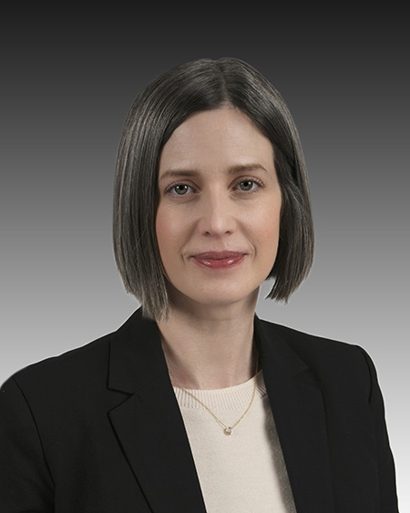
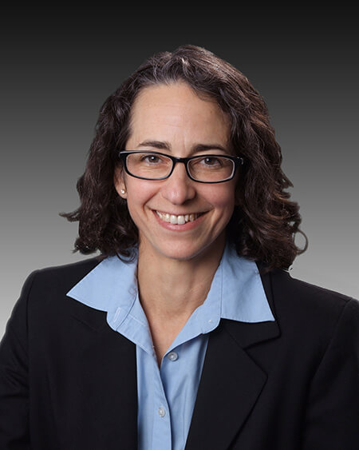
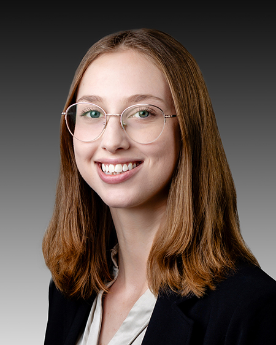

Who We Are
Kirschbaum Law Group, LLC is a Connecticut law firm with a statewide probate court practice. Our probate attorneys are available to help people in all 54 probate court districts throughout the State of Connecticut, including the {{@config.custom.districtName}} Probate Court.
Our Team
|  | Damon Kirschbaum Managing Attorney Damon Kirschbaum is the firm’s managing attorney. He makes decisions about whether to represent particular potential clients. He helps open cases for new clients. He also manages the firm’s probate court practice with the supervising attorney. |
|  | Anna-Liisa Nixon Supervising Attorney Anna-Liisa Nixon is the supervising attorney for the firm’s probate court practice. She supervises the work done for all of the firm’s probate court cases. Anna-Liisa talks to new probate court clients after they hire us to gather information and materials, identify the legal issues, and make plans for the cases. |
|  | Amy Kirschbaum Director of Finance and Administration Amy Kirschbaum is the firm’s director of finance and administration. She helps with opening cases for new clients. She also manages all financial aspects of the firm’s representation of clients. |
|  | Sophia Muce New Client Coordinator Sophia Muce is a new client coordinator for the firm. She takes the initial call from potential clients and talks to them about how we might be able to help them. She also helps open cases for new clients. |